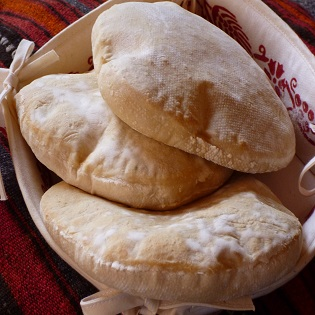

Kefta
The predecessor of the Indian "kofta", the "kefta" is simply a grilled dish of ground meat, like lamb or beef. It is mildly seasoned with paprika, parsley, and sometimes onions. It is grilled like a sausage.

This is the Arabic flatbread quite like the pita that you will find throughout the region, wherever you go. It is thick and traditionally baked in a oven (tannur).

The predecessor of the Indian "kofta", the "kefta" is simply a grilled dish of ground meat, like lamb or beef. It is mildly seasoned with paprika, parsley, and sometimes onions. It is grilled like a sausage.
Yoghurt is perhaps as popular in the Arab world as in India. The labneh is a creamier version with the water drained out.
Qahwa is a traditional Arabic coffee recipe that is the most popular Arabian cuisine. Qahwa is made from green coffee beans and cardamom. It is often served with dates.